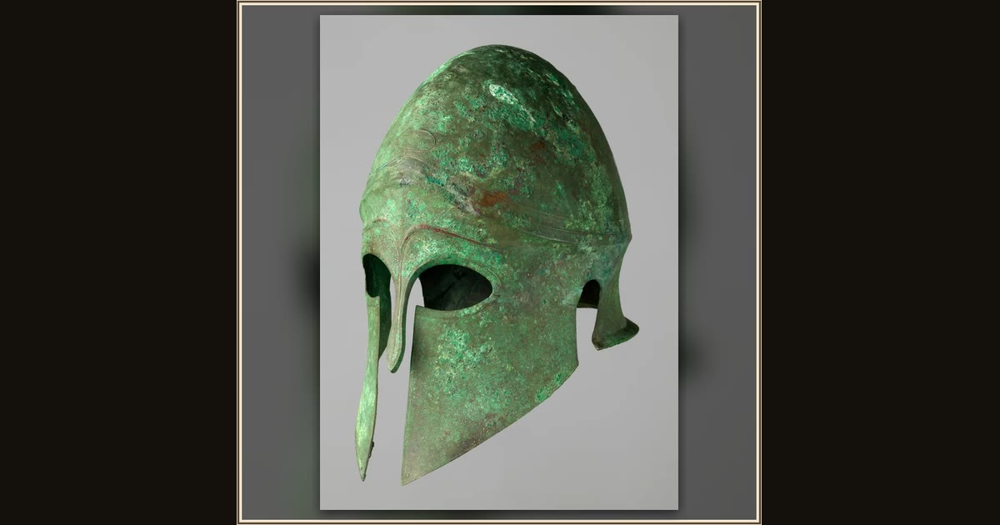

Helmet of the Corinthian Type and Pair of Greaves
Greek · early 5th century BCE · met
A bronze Corinthian helmet from the early fifth century BCE evokes the arms of the Athenians as Herodotus describes their ranks forming for battle at Marathon (6.111.1) Explore its place in Herodotus's Histories, Book VI, chapter 272.